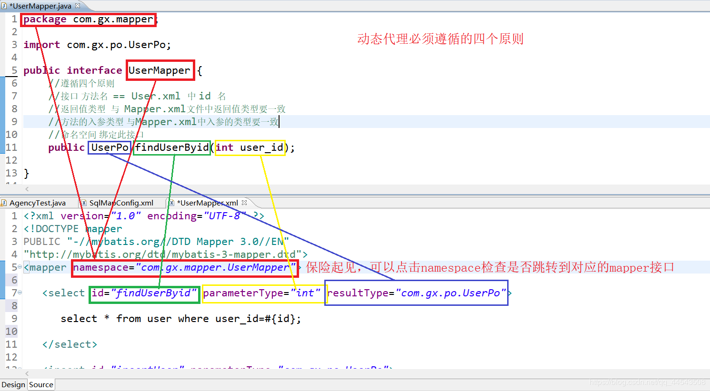
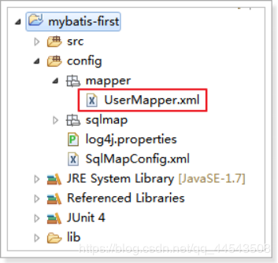

原文连接:https://www.cnblogs.com/yichunguo/p/11990961.html
目录
@
使用MyBatis开发Dao，通常有两个方法，即原始Dao开发方法和Mapper动态代理开发方法。原始Dao开发中存在以下问题：
Dao方法体存在重复代码：通过SqlSessionFactory创建SqlSession，调用SqlSession的数据库操作方法
调用sqlSession的数据库操作方法需要指定statement的id，这里存在硬编码，不得于开发维护。
而动态代理开发中Mapper接口开发方法只需要程序员编写Mapper接口（相当于Dao接口），由
Mybatis框架根据接口定义创建接口的动态代理对象，代理对象的方法体同上边Dao接口实现类方法。
使用mapper代理的方法来开发dao时，程序员只需要干两件事即可：
1、编写mapper.xml映射文件
2、编写mapper接口（相当于dao接口）
Mapper接口开发需要遵循以下四个规范(建议初学者结合下图理解)：
1、Mapper.xml文件中的namespace与mapper接口的类路径相同。
2、Mapper接口方法名和Mapper.xml中定义的每个statement的id相同
3、Mapper接口方法的输入参数类型和mapper.xml中定义的每个sql 的parameterType的类型相同
4、Mapper接口方法的输出参数类型和mapper.xml中定义的每个sql的resultType的类型相同
咳咳...初学者看文字（Mapper接口开发四个规范）属实有点费劲，博主我就废了点劲做了如下图，方便理解：

原始Dao开发方式
原始Dao开发方法需要程序员编写Dao接口和Dao实现类。
1. 编写映射文件
编写映射文件如下：（也可以使用入门程序完成的映射文件）
<?xml version="1.0" encoding="UTF-8" ?>
<!DOCTYPE mapper
PUBLIC "-//mybatis.org//DTD Mapper 3.0//EN"
"http://mybatis.org/dtd/mybatis-3-mapper.dtd">
<!-- namespace：命名空间，用于隔离sql，还有一个很重要的作用，后面会讲 -->
<mapper namespace="test">
<!-- 根据id查询用户 -->
<select id="queryUserById" parameterType="int"
resultType="com.gx.mybatis.pojo.User">
select * from user where id = #{id}
</select>
<!-- 根据username模糊查询用户 -->
<select id="queryUserByUsername" parameterType="string"
resultType="com.gx.mybatis.pojo.User">
select * from user where username like '%${value}%'
</select>
<!-- 保存用户 -->
<insert id="saveUser" parameterType="com.gx.mybatis.pojo.User">
<selectKey keyProperty="id" keyColumn="id" order="AFTER"
resultType="int">
SELECT LAST_INSERT_ID()
</selectKey>
insert into user(username,birthday,sex,address)
values(#{username},#{birthday},#{sex},#{address})
</insert>
</mapper>
### 2. 编写Dao接口
先进行DAO的接口开发，编码如下：
public interface UserDao {
/**
* 根据id查询用户
*
* @param id
* @return
*/
User queryUserById(int id);
/**
* 根据用户名模糊查询用户
*
* @param username
* @return
*/
List<User> queryUserByUsername(String username);
/**
* 保存用户
*
* @param user
*/
void saveUser(User user);
}
3.编写Dao实现类
编写的Dao实现类如下
public class UserDaoImpl implements UserDao {
private SqlSessionFactory sqlSessionFactory;
public UserDaoImpl(SqlSessionFactory sqlSessionFactory) {
super();
this.sqlSessionFactory = sqlSessionFactory;
}
@Override
public User queryUserById(int id) {
// 创建SqlSession
SqlSession sqlSession = this.sqlSessionFactory.openSession();
// 执行查询逻辑
User user = sqlSession.selectOne("queryUserById", id);
// 释放资源
sqlSession.close();
return user;
}
@Override
public List<User> queryUserByUsername(String username) {
// 创建SqlSession
SqlSession sqlSession = this.sqlSessionFactory.openSession();
// 执行查询逻辑
List<User> list = sqlSession.selectList("queryUserByUsername", username);
// 释放资源
sqlSession.close();
return list;
}
@Override
public void saveUser(User user) {
// 创建SqlSession
SqlSession sqlSession = this.sqlSessionFactory.openSession();
// 执行保存逻辑
sqlSession.insert("saveUser", user);
// 提交事务
sqlSession.commit();
// 释放资源
sqlSession.close();
}
}4.编写Dao测试
创建一个JUnit的测试类，对UserDao进行测试（充当main方法），测试代码如下：
public class UserDaoTest {
private SqlSessionFactory sqlSessionFactory;
@Before
public void init() throws Exception {
// 创建SqlSessionFactoryBuilder
SqlSessionFactoryBuilder sqlSessionFactoryBuilder = new SqlSessionFactoryBuilder();
// 加载SqlMapConfig.xml配置文件
InputStream inputStream = Resources.getResourceAsStream("SqlMapConfig.xml");
// 创建SqlsessionFactory
this.sqlSessionFactory = sqlSessionFactoryBuilder.build(inputStream);
}
@Test
public void testQueryUserById() {
// 创建DAO
UserDao userDao = new UserDaoImpl(this.sqlSessionFactory);
// 执行查询
User user = userDao.queryUserById(1);
System.out.println(user);
}
@Test
public void testQueryUserByUsername() {
// 创建DAO
UserDao userDao = new UserDaoImpl(this.sqlSessionFactory);
// 执行查询
List<User> list = userDao.queryUserByUsername("五");
for (User user : list) {
System.out.println(user);
}
}
@Test
public void testSaveUser() {
// 创建DAO
UserDao userDao = new UserDaoImpl(this.sqlSessionFactory);
// 创建保存对象
User user = new User();
user.setUsername("孙尚香肠");
user.setBirthday(new Date());
user.setSex("1");
user.setAddress("蜀国");
// 执行保存
userDao.saveUser(user);
System.out.println(user);
}
}
Mapper动态代理方式
1.定义Mapper.xml(映射文件)
定义mapper映射文件UserMapper.xml
将UserMapper.xml放在config下mapper目录下，效果如下：

2、编写UserMapper.xml配置文件内容：
<?xml version="1.0" encoding="UTF-8" ?>
<!DOCTYPE mapper
PUBLIC "-//mybatis.org//DTD Mapper 3.0//EN"
"http://mybatis.org/dtd/mybatis-3-mapper.dtd">
<!-- namespace：命名空间，用于隔离sql -->
<!-- 还有一个很重要的作用，使用动态代理开发DAO，1. namespace必须和Mapper接口类路径一致 -->
<mapper namespace="com.gx.mybatis.mapper.UserMapper">
<!-- 根据用户id查询用户 -->
<!-- 2. id必须和Mapper接口方法名一致 -->
<!-- 3. parameterType必须和接口方法参数类型一致 -->
<!-- 4. resultType必须和接口方法返回值类型一致 -->
<select id="queryUserById" parameterType="int"
resultType="com.gx.mybatis.pojo.User">
select * from user where id = #{id}
</select>
<!-- 根据用户名查询用户 -->
<select id="queryUserByUsername" parameterType="string"
resultType="com.gx.mybatis.pojo.User">
select * from user where username like '%${value}%'
</select>
<!-- 保存用户 -->
<insert id="saveUser" parameterType="com.gx.mybatis.pojo.User">
<selectKey keyProperty="id" keyColumn="id" order="AFTER"
resultType="int">
select last_insert_id()
</selectKey>
insert into user(username,birthday,sex,address) values
(#{username},#{birthday},#{sex},#{address});
</insert>
</mapper>3.编写UserMapper(接口文件)
创建UserMapper接口代码如下：
public interface UserMapper {
/**
* 根据id查询
*
* @param id
* @return
*/
User queryUserById(int id);
/**
* 根据用户名查询用户
*
* @param username
* @return
*/
List<User> queryUserByUsername(String username);
/**
* 保存用户
*
* @param user
*/
void saveUser(User user);
}
4.加载UserMapper.xml文件
修改SqlMapConfig.xml文件，添加以下所示的内容：
<!-- 加载映射文件 -->
<mappers>
<mapper resource="sqlmap/User.xml" />
<mapper resource="mapper/UserMapper.xml" />
</mappers>
5.编写测试
编写的测试方法如下：
public class UserMapperTest {
private SqlSessionFactory sqlSessionFactory;
@Before
public void init() throws Exception {
// 创建SqlSessionFactoryBuilder
SqlSessionFactoryBuilder sqlSessionFactoryBuilder = new SqlSessionFactoryBuilder();
// 加载SqlMapConfig.xml配置文件
InputStream inputStream = Resources.getResourceAsStream("SqlMapConfig.xml");
// 创建SqlsessionFactory
this.sqlSessionFactory = sqlSessionFactoryBuilder.build(inputStream);
}
@Test
public void testQueryUserById() {
// 获取sqlSession，和spring整合后由spring管理
SqlSession sqlSession = this.sqlSessionFactory.openSession();
// 从sqlSession中获取Mapper接口的代理对象
UserMapper userMapper = sqlSession.getMapper(UserMapper.class);
// 执行查询方法
User user = userMapper.queryUserById(1);
System.out.println(user);
// 和spring整合后由spring管理
sqlSession.close();
}
@Test
public void testQueryUserByUsername() {
// 获取sqlSession，和spring整合后由spring管理
SqlSession sqlSession = this.sqlSessionFactory.openSession();
// 从sqlSession中获取Mapper接口的代理对象
UserMapper userMapper = sqlSession.getMapper(UserMapper.class);
// 执行查询方法
List<User> list = userMapper.queryUserByUsername("五");
for (User user : list) {
System.out.println(user);
}
// 和spring整合后由spring管理
sqlSession.close();
}
@Test
public void testSaveUser() {
// 获取sqlSession，和spring整合后由spring管理
SqlSession sqlSession = this.sqlSessionFactory.openSession();
// 从sqlSession中获取Mapper接口的代理对象
UserMapper userMapper = sqlSession.getMapper(UserMapper.class);
// 创建保存对象
User user = new User();
user.setUsername("刘备胎");
user.setBirthday(new Date());
user.setSex("2");
user.setAddress("鼠国");
// 执行查询方法
userMapper.saveUser(user);
System.out.println(user);
// 和spring整合后由spring管理
sqlSession.commit();
sqlSession.close();
}
}
如果本文对你有一点点帮助，那么请点个赞呗，谢谢~
最后，若有不足或者不正之处，欢迎指正批评，感激不尽！如果有疑问欢迎留言，绝对第一时间回复！
欢迎各位关注我的公众号，一起探讨技术，向往技术，追求技术，说好了来了就是盆友喔...